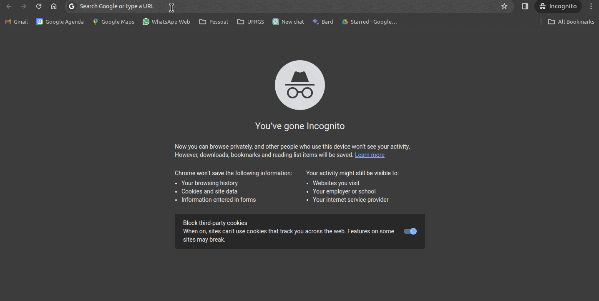
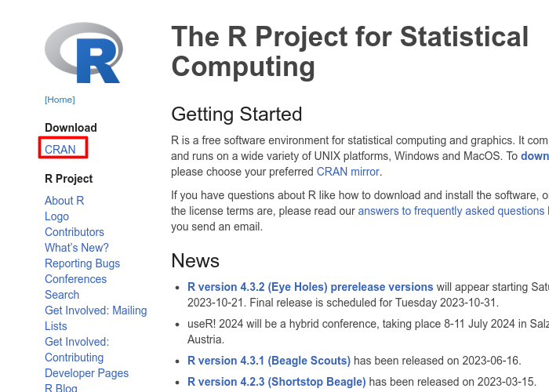
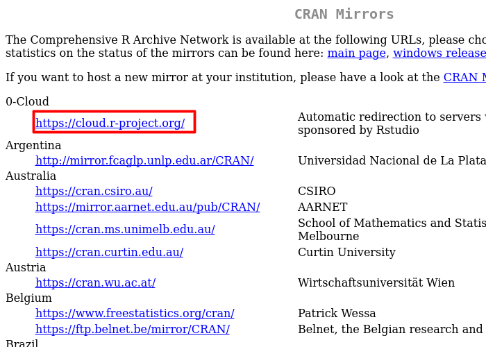
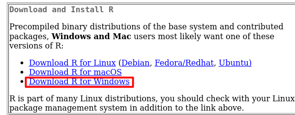
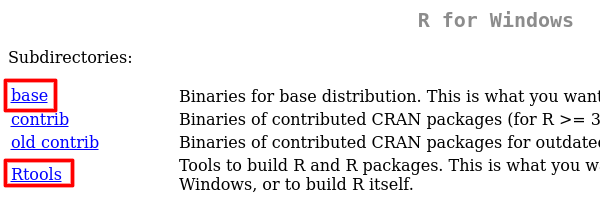
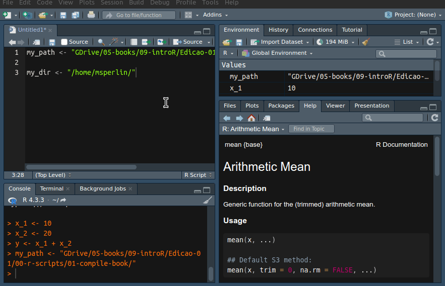

1 Introdução
É indiscutível que estamos vivendo em um momento histórico onde a produção de informações é totalmente digitalizada e armazenada. Desde compras na internet a geolocalização pelo celular, um volume imenso de dados é produzido e guardado em bancos de dados de diferentes empresas e organizações.
Um ambiente competitivo motiva as empresas a investirem na formação de equipes especializadas em análise de dados para tomarem as melhores decisões corporativas. Sem dúvida, o período atual é bastante prolífico para profissionais com conhecimento e experiência na utilização das ferramentas corretas para a análise computacional de dados.
É nesse ambiente que se destaca o papel do R, uma linguagem de programação voltada para a resolução de problemas computacionais envolvendo análise, processamento, visualização e modelagem de dados. Nas próximas seções, explicarei o que é o R e quais são suas vantagens frente a outras alternativas.
1.1 O que é o R
O R é uma linguagem de programação voltada para a resolução de problemas estatísticos e para a visualização gráfica de dados. O código base do R foi inspirado na linguagem S, inicialmente criada no laboratório da Bell/AT&T por John Chambers e seus colegas. A ideia de criar uma linguagem de programação voltada a estatística foi redesenhada por dois acadêmicos, Ross Ihaka e Robert Gentleman, ambos da universidade de Auckland - Nova zelândia.
Hoje, R é sinônimo de programação voltada à análise de dados, com uma larga base de usuários acadêmicos e da indústria. É muito provável que analistas de áreas diversas, desde Economia até Biologia, ou mesmo Música, encontrem no R uma quantidade significativa de códigos que facilitem suas análises. No campo empresarial, grandes empresas como Google e Microsoft já o adotaram como a linguagem interna para a análise de dados. O R é atualmente mantido pelo R Foundation e o R Consortium, um esforço coletivo para financiar projetos de extensão da linguagem.
E o mais importante: o R é totalmente livre e disponível em vários sistemas operacionais. Seja você um usuário do Windows, do Linux/Unix ou do MacOS, existe uma instalação do R para a sua plataforma, e os seus códigos devem rodar entre uma e outra com mínimas alterações.
Qual a origem do nome R?
O que pode ser dito como uma ato pouco criativo, os desenvolvedores escolheram a letra R pois era a primeira letra de seus primeiros nomes, Ross e Robert.
1.2 Por que Escolher o R
Possivelmente você esteja se perguntando por que deve optar pelo R e investir tempo em sua aprendizagem, ao invés de escolher uma outra linguagem.
Em primeiro lugar, o R é uma plataforma madura, estável, continuamente suportada e intensamente utilizada na indústria. Ao escolher o R, você terá a bagagem computacional necessária não somente para uma carreira acadêmica em pesquisa científica, mas também para o trabalho em organizações privadas. Nesse sentido, com a escolha de outra linguagem de programação menos popular ou proprietária/comercial, é provável que tal linguagem não seja utilizada em um ambiente empresarial e isso pode limitar as suas futuras oportunidades profissionais. Sem dúvida, o conhecimento de programação em um plataforma aberta de análise de dados aumenta a sua atratividade como profissional.
Aprender a linguagem do R é fácil. A experiência que tenho ensinando o R em sala de aula me permite afirmar que os alunos, mesmo aqueles sem experiência em programação, apresentam facilidade em aprender a linguagem e em utilizá-la para criar seus próprios códigos de pesquisa. A linguagem é intuitiva e certas normas e funções podem ser estendidas para diferentes casos. Após entender como o programa funciona, fica fácil descobrir novas funcionalidades partindo de uma lógica anterior. Essa notação compartilhada entre procedimentos facilita o aprendizado.
A interface do R e RStudio torna o uso da ferramenta bastante produtivo. A interface gráfica aberta e gratuita disponibilizada pela RStudio/Posit facilita o uso do software, assim como a produtividade do usuário. Utilizando o ambiente de trabalho do R e RStudio, têm-se a disposição diversas ferramentas que facilitam e estendem o uso da plataforma.
Os pacotes do R permitem as mais diversas funcionalidades. Logo veremos que o R permite o uso de código de outros usuários, os quais podem ser localmente instalados através de um simples comando. Esses estendem a linguagem básica do R e possibilitam as mais diversas funcionalidades. Além das funções óbvias de analisar dados, podes utilizar o R para mandar emails, escrever e publicar um livro, criar provas objetivas com conteúdo dinâmico, contar piadas e poemas (é sério!), acessar e coletar dados da internet, entre diversas outras funcionalidades.
O R tem compatibilidade com diferentes linguagens e sistemas operacionais. Se, por algum motivo, o usuário precisar utilizar código de outra linguagem de programação tal como C++, Python, Julia, é fácil integrar a mesma dentro de um programa do R. Diversos pacotes estão disponíveis para facilitar esse processo. Portanto, o usuário nunca fica restrito a uma única linguagem e tem flexibilidade para escolher as suas ferramentas de trabalho.
O R é totalmente gratuito! O programa e todos os seus pacotes são completamente livres, não tendo custo algum de licença e distribuição. Portanto, você pode utilizá-lo e modificá-lo livremente no seu trabalho ou computador pessoal. Essa é uma razão muito forte para a adoção da linguagem em um ambiente empresarial, onde a obtenção de licenças individuais e coletivas de outros softwares comerciais pode incidir um alto custo financeiro.
1.3 Usos do R
O R é uma linguagem de programação completa e qualquer problema computacional relacionado a dados pode ser resolvido com base nela. Dada a adoção do R por diferentes áreas de conhecimento, a lista de possibilidades é extensa. Para o caso de Finanças e Economia, destaco abaixo as possíveis utilizações do programa:
Substituir e melhorar tarefas intensivas e repetitivas dentro de ambientes corporativos, geralmente realizadas em planilhas eletrônicas;
Criação de relatórios estruturados periódicos com a tecnologia RMarkdown e quarto. Podes, por exemplo, criar um relatório automatizado que importe dados brutos e analise as vendas as vendas na empresa no mês.
Desenvolvimento de rotinas para administrar portfolios de investimentos e executar ordens financeiras;
Criação de ferramentas para controle, avaliação e divulgação de índices econômicos sobre um país ou região;
Execução de diversas possibilidades de pesquisa científica através da estimação de modelos econométricos e testes de hipóteses;
Criação e manutenção de websites dinâmicos ou estáticos através do pacotes
shiny,blogdownoudistill;
Além dos usos destacados anteriormente, o acesso público a pacotes desenvolvidos por usuários expande ainda mais essas funcionalidades. O site da CRAN (Comprehensive R Archive Network)1 oferece um Task Views do software para o tópico de Finanças2 e Econometria3. Nos links é possível encontrar os principais pacotes disponíveis para cada tema. Isso inclui a importação de dados financeiros da internet, a estimação de um modelo econométrico específico, cálculos de diferentes estimativas de risco, entre várias outras possibilidades. A leitura dessa página e o conhecimento desses pacotes são essenciais para aqueles que pretendem trabalhar com Finanças e Economia. Vale destacar, porém, que essa lista é moderada e apresenta apenas os principais itens. A lista completa de pacotes é muito maior do que o apresentado no Task Views.
1.4 Como Instalar o R
O R é instalado no seu sistema operacional como qualquer outro programa. A maneira mais direta e funcional de instalá-lo é ir ao website do R em e clicar no link CRAN do painel Download, conforme mostrado na animação a seguir.
knitr::include_graphics('resources/figs/cran-webshot-01.png')
A próxima tela apresenta a escolha do espelho para baixar os arquivos de instalação. O repositório do CRAN é espelhado em diversas partes do mundo, permitindo acesso rápido para os usuários. Para a grande maioria dos leitores deste livro, essa localidade deve ser o Brasil. Portanto, você pode escolher um dos links da instituição mais próxima, tal como o da UFPR (Universidade Federal do Paraná). Em caso de dúvida, escolha o repositório do RStudio 0-Cloud (veja Figura \(\ref{fig:website-cran-2}\)), o qual automaticamente direciona para o local mais próximo.

O próximo passo é selecionar o sistema operacional do computador. Devido à maior popularidade da plataforma Windows, a partir de agora daremos enfoque à instalação do R nesse sistema. As instruções de instalação nos demais sistemas operacionais podem ser facilmente encontradas na internet. Destaca-se que, independente da plataforma, o modo de uso do R é o mesmo. Existem, porém, algumas exceções, principalmente quando o R interage com o sistema de arquivos. Essas exceções serão destacadas no decorrer do livro. Assim, mesmo que você esteja utilizando Linux ou MacOS, poderá tirar proveito do material aqui apresentado.

Após clicar no link Download R for Windows, a próxima tela irá mostrar as seguintes opções de download: base, contrib, old.contrib e RTools. Dentre as opções de download, a primeira (base) deve ser selecionada. O link acessa a instalação básica do R para Windows. O link contrib e old.contrib acessa os pacotes/módulos disponíveis para o R. Não precisas acessar estes últimos links, existe uma maneira muito mais fácil de instalar pacotes, como veremos em seguida.
O último link, RTools, serve para instalar dependências necessárias no caso do usuário desenvolver e distribuir os seus próprios pacotes de R. Este não é uma instalação necessária para usuários iniciantes. Porém, saiba que alguns pacotes externos ao CRAN podem exigir a instalação do RTools para compilação de código. Minha sugestão é que já instale o Rtools e assim evite qualquer problema futuro.

Após clicar no link base, a próxima tela mostrará o link para o download do arquivo de instalação do R no Windows. Após baixar o arquivo, abra-o e siga os passos da tela de instalação do R. Escolha a língua inglesa em todas etapas do processo. O uso da língua inglessa não é acidental. Este é a melhor forma, mesmo para iniciantes, de se aprender a usar o R. É possível instalar uma versão em português porém isso limita o potencial da ferramenta. Caso não for fluente em inglês, não se preocupe, o vocabulário necessário é básico. Neste momento, nenhuma outra configuração especial é necessária. Sugiro manter todas as escolhas padrão selecionadas e simplesmente ir aceitando as telas de diálogo. Após a instalação do R, partimos para a instalação do RStudio.
R_ver <- R.version
major <- R_ver$major
minor <- R_ver$minor
R_version_str <- paste0(major, ".", minor)
Importante
A cada quatro meses uma nova versão do R é lançada, corrigindo bugs e implementando novas soluções. Temos dois tipos principais de versões, major e minor. Por exemplo, na data de compilação do livro, 10/01/2024, a última versão disponível do R é 4.3.2. O primeiro dígito (4) indica a versão major e todos os demais são do tipo minor. Geralmente, as mudanças minor são bem específicas e, possivelmente, terão pouco impacto no seu trabalho.
Porém, mudanças do tipo major refletem totalmente no ecossistema de pacotes do R. Toda vez que instalar uma nova versão major do R, terás que reinstalar todos os pacotes utilizados. O problema é que não é incomum problemas de incompatibilidade de pacotes com a nova versão.
Minha dica é: toda vez que uma nova versão major do R sair, espere alguns meses antes de instalar na sua máquina. Assim, o autores dos pacotes terão mais tempo para atualizar os seus códigos, minimizando a possibilidade de problemas de compatibilidade.
1.5 Instalando o RStudio
A instalação do R inclui a sua própria interface gráfica, um programa que facilita a edição e execução de nossos scripts. Essa, porém, possui várias limitações. O RStudio é um software que torna o uso e o visual do R muito mais prático e eficiente. Uma forma de entender essa relação é com uma analogia com carros. Enquanto o R é o motor da linguagem de programação, o RStudio é a carroceria e o painel de instrumentos. Além de apresentar um visual mais atrativo, o RStudio também é acrescido de várias funcionalidades que facilitam a vida do usuário, possibilitando a construção de projetos e pacotes do próprio R, a criação de documentos dinâmicos (Sweave/knitr) e a interface com edição de textos em LaTeX, entre várias outras. Assim como o R, o RStudio também é gratuito e pode ser utilizado no ambiente empresarial.
A instalação do RStudio é mais simples do que a do R. Os arquivos estão disponíveis no endereço disponibilizado no site da empresa Posit Posit. Após acessar a página, clique em Download RStudio e depois em Download Rstudio Desktop. Logo após, basta selecionar o arquivo relativo ao sistema operacional em que você irá trabalhar. Provavelmente, essa opção será Windows Vista/7/8/10. Note que, assim como o R, o RStudio também está disponível para diferentes plataformas.
Destaco que o uso do RStudio não é essencial para desenvolver programas no R. Outros softwares de interface estão disponíveis e podem ser utilizados. Porém, dada minha experiência atual, o RStudio é o programa de interface que oferece a maior variedade de funcionalidades para essa linguagem, além de ser amplamente utilizado, o que justifica a sua escolha. Como uma alternativa ao RStudio, sugiro o vscode, o qual possui uma ótima integração com o R.
1.6 Recursos na Internet
A comunidade R é viva e envolvente. Na internet é possível encontrar uma diversidade de material sobre o uso do R. Diversos usuários, assim como o próprio autor do livro, publicam material sobre o uso R em seus blogs. Isso inclui anúncios de pacotes, publicações sobre análise de dados na vida real, curiosidades, novidades e tutoriais. R-Bloggers é um site internacional que agrega esses blogs em um único local, tornando mais fácil para qualquer um acessar e participar. O conteúdo do R-Bloggers, porém, é todo em inglês.
Recentemente, uma lista de blogs locais sobre o R está compilada e organizada por Marcos Vital no Github. Eu recomendo a inscrição no feed do R-Bloggers, além dos blogs nacionais. Não só você será informado sobre o que está acontecendo no universo do R, mas também aprenderá muito lendo artigos e os códigos de outros usuários.
Aprender e usar R pode ser uma experiência social. Várias conferências e grupos de usuários estão disponíveis em muitos países, incluindo o Brasil. O grupo R Brasil - Programadores no Facebook é bastante ativo, com um grande número de participantes. Recomendo fortemente a inscrição neste grupo e o acompanhamento das discussões relacionadas ao uso do R. Diversas conferências locais sobre o R são divulgadas nesse grupo.
1.7 Organização e Material do Livro
Este livro tem uma abordagem prática no uso do R e será acompanhado por uma série de códigos que irão exemplificar e mostrar para o leitor as funcionalidades do programa. Para tirar o máximo de proveito do material, sugiro que você primeiro busque entender o código mostrado e, somente então, tente utilizá-lo em seu próprio computador. O índice remissivo disponibilizado no final do livro impresso serve como uma mapa de uso das funções. Toda vez que uma função é chamada no livro, um registro do número da página é criado no índice remissivo. Esse indica, também, o pacote que a função pertence. Podes utilizar este mapa para localizar o uso de qualquer função ou pacote no decorrer do livro.
Sugiro também o uso da versão web do livro4, a qual permite que os código de exemplo sejam copiados direto para a sua sessão do R. Assim, perderás menos tempo digitando código, sobrando tempo para o estudo.
Aprender a programar em uma nova linguagem é como aprender uma língua estrangeira: o uso no dia-a-dia é de extrema importância para criar fluência. Sempre que possível, teste o código no seu computador e brinque com o mesmo, modificando os exemplos dados e verificando o efeito das modificações nas saídas do programa. Procure sempre entender como a rotina estudada pode ajudar na solução de um problema seu. Cada capítulo apresenta no seu final uma lista de exercícios, incluindo questões do tipo desafio. Podes testar as suas habilidades de programação resolvendo as atividades propostas. Vale relembrar que todo o código deste livro está disponibilizado na internet. Não precisas, portanto, escrever o código diretamente do livro. Podes copiar e colar do código fonte disponibilizado no site.
No decorrer da obra, toda demonstração de código terá duas partes: o código em si e sua saída do R. Essa saída nada mais é do que o resultado dos comandos na tela do programa. Todas as entradas e saídas de código serão sinalizadas no texto com um formato especial. Veja o exemplo a seguir:
# create a list
L <- list(var1 = 'abc', var2 = 1:5)
# print to prompt
print(L)R> $var1
R> [1] "abc"
R>
R> $var2
R> [1] 1 2 3 4 5No caso anterior, os textos L <- list(var1 = 'abc', var2 = 1:5) e print(L) são os códigos de entrada. A saída do programa é a apresentação na tela dos elementos de x, com o símbolo antecessor R>. Por enquanto não se preocupe em entender e reproduzir o código utilizado acima. Iremos tratar disso no próximo capítulo.
Note que faço uso da língua inglesa no código, tanto para a nomeação de objetos quanto para os comentários. Isso não é acidental. O uso da língua inglesa facilita o desenvolvimento de código ao evitar caracteres latinos, além de ser uma das línguas mais utilizadas no mundo. Portanto, é importante já ir se acostumando com esse formato. O vocabulário necessário, porém, é limitado. De forma alguma precisarás ter fluência em inglês para entender o código.
O código também pode ser espacialmente organizado usando novas linhas. Esse é um procedimento comum em torno de argumentos de funções. O próximo pedaço de código é equivalente ao anterior, e executará exatamente da mesma maneira. Observe como usei uma nova linha para alinhar verticalmente os argumentos da função list. Você verá em breve que, ao longo do livro, esse tipo de alinhamento vertical é constantemente usado em códigos longos. Afinal, o código tem que necessariamente caber na página do livro impresso.
# create a list
L <- list(var1 = 'abc',
var2 = 1:5)
# print to prompt
print(L)R> $var1
R> [1] "abc"
R>
R> $var2
R> [1] 1 2 3 4 5O código também segue uma estrutura bem definida. Uma das decisões a ser feita na escrita de códigos de computação é a forma de nomear os objetos e como lidar com a estrutura do texto do código em geral. É recomendável seguir um padrão limpo de código, de forma que o mesmo seja fácil de ser mantido ao longo do tempo e de ser entendido por outros usuários. Para este livro, foi utilizado uma mistura de escolhas pessoais do autor com o estilo de código sugerido pelo Google. O usuário, porém, é livre para escolher a estrutura que achar mais eficiente. Voltaremos a discutir estrutura de código no capítulo @ref(otimizacao).
1.8 Animações de código
Esta edição do livro inclui animações de código no formato gif, as quais devem ajudar a memorizar e visualizar as diferentes operações na plataforma. Para os leitores do livro impresso, obviamente não existe maneira de incluir animações em paper. Como alternativa, cada animação inclui um QRCode que irá direcionar o leitor para página na web com a animação em questão. A imagem a esquera é a primeira tela de cada animação. Veja o exemplo abaixo na Figure 1.2:

Para utilizar, abra seu celular e aponte a câmera para o QRCode da página. Após isso, basta clicar no link que aparecer na tela do celular.